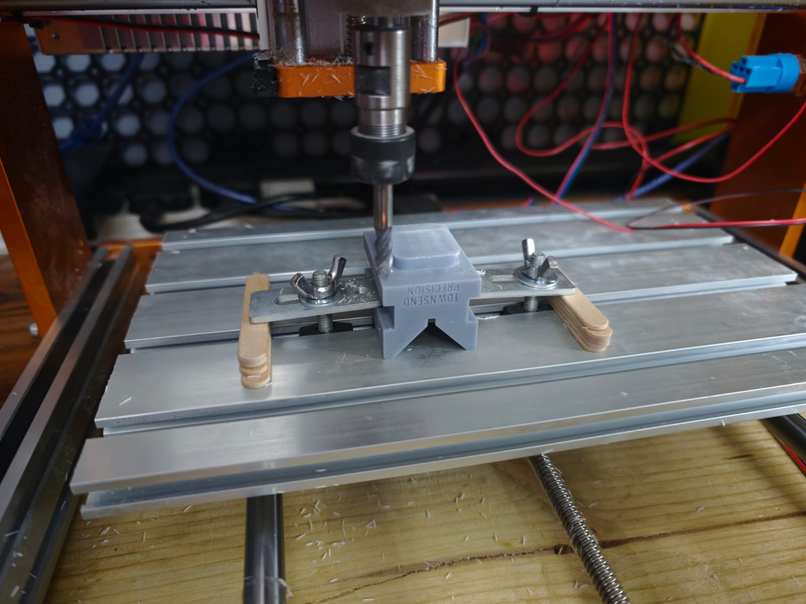
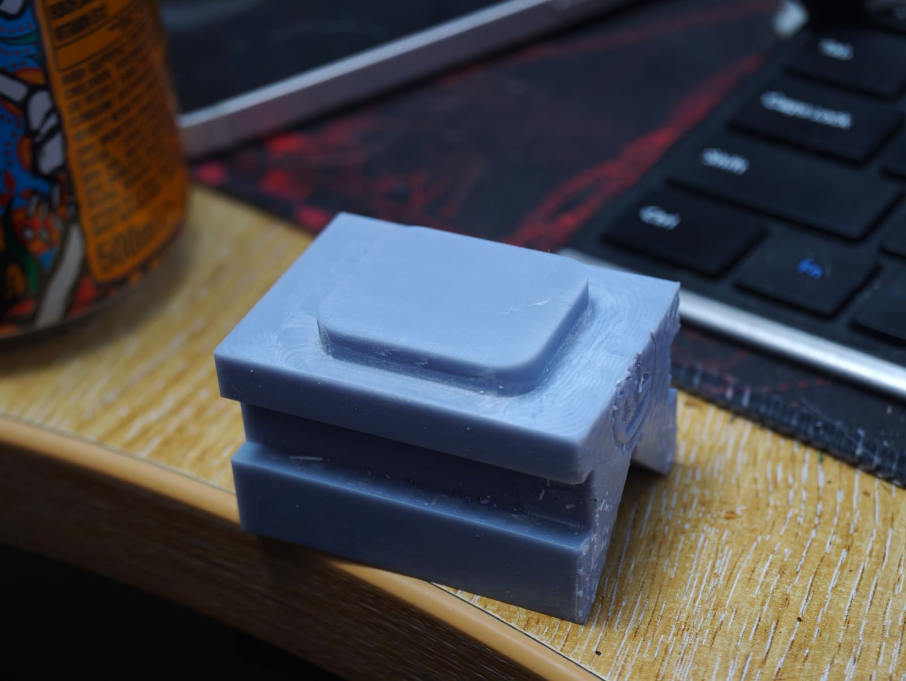

MORE CNC!
After a lot of feedback on my first few machining trials, it turned out my spindle speed was too high and my feed rate was too low. This time I went with roughly 5,800 RPM, with a surface speed — look, I am learning! — of 110 m/min. The feed rate was 466 mm/min.
I’ve been scared to overdo the cutting, so I’d been running high spindle speed with a low feed rate, but that isn’t how it works. Especially when I’ve gone from a 2.5 mm cutter to a 6 mm one. Here’s me thinking I could use the same speeds and feeds. How silly.
Even though I didn’t have coolant or air at the time — my airbrush compressor was dead and I couldn’t find the damn charger — I tried clearing chips with a brush and a hoover (vacuum cleaner, for you Americans) while it was running. That was not a safe method. Chips should only be cleared with the machine stopped and isolated, following the machine, tool, and material guidance. This post records my trial; it is not a setup or operating instruction.
The dodgy-but-clamped setup
Now, some of you are going to absolutely hate my setup. It’s okay, I do too, but I don’t have a vice (yet).

Yes, those are lollipop sticks. Yes, it looks dodgy. I had T-nuts and the part felt tighter than it had without the sticks, but this improvised arrangement was not a validated safe setup and should not be copied as one.
I didn’t go for anything too complicated yet, since I’m just learning how to properly calculate speeds and feeds — as well as learning that surface speed apparently matters! So this was just a simple contour mill, with a roughing pass, a finishing pass, and then a face for the top.
Contouring and facing
Both contours used Fusion’s adaptive clearing, which is great, but I do need to learn other methods because, from what I’ve heard, not all CAM software has it. The contour was 4.5 mm deep, with a 0.5 mm axial and radial finishing pass.
The finish on the contour and the bottom face came out great, I won’t lie. With less friction I’m getting a much better finish.
The face milling is something I’m happy with again, but I was only taking a 0.5 mm cut. Something I’m not happy with is that the surface has a noticeable flatter section at the end of the facing, where the tool wasn’t passing over existing areas.
I’ll ask around, but I already suspect my stepover for the face milling could probably be something like 2 mm. I will check before I foolishly make assumptions again, though.

Still enjoying the CNC rabbit hole
I’m really enjoying the CNC journey so far, and I’m excited to learn some more complicated stuff. I’m especially looking forward to getting into 3D geometry, like topographic maps. I’d like to make some maps out of wood or aluminium of some of the mountains I’ve hiked up.
Now that I’ve finished with my college assignments for the year, I’ve got some free time and I’m utilising it as much as I can. As well as the CNC, I’m going to focus on some more electronics-based projects in preparation for the open source CMM.
I don’t have an oscilloscope unfortunately — I do have one of those cheap “build your own” ones, but I haven’t built it yet, how ironic — but I do have a new DC power supply, a couple of Raspberry Pis and Arduinos, and a battery terminal welder. That means I can finally utilise my massive hoard of disposable vape batteries. Who the hell throws away a perfectly good battery?
I’ve got a couple of hundred I’d like to use for small projects. Maybe a power bank. Who the hell knows!
Back into electronics and logic
Given all that, I need to get back into the software as well as the hardware. It’s been a while since I spent my free time hacking EEPROMs, so I’ve got Cadence OrCAD installed. It’s a piece of software I distinctly remember being brilliant compared to the one the college provided, so I need to touch up my skills on it again and refresh my binary logic for logic gates.
A very silly way for me to do this is with Minecraft.
I have a server I’ve had open for years, and it’s been going for ages. If anyone knows anything about the game, it features a wiring mechanism called redstone, which functions virtually identically to real logic. It’s not the exact same at all, but it is Turing complete, and all gates can easily be replicated. Therefore, chips like adders and so on can be replicated too.
The plan is either a roulette machine or a blackjack table against a “dealer”, whichever works out simpler.
I’ve done the boring “make a calculator in the game” thing, so I’m going for something a little more interactive.
Anyway, I’ve gone on too long. I’ll update with progress.